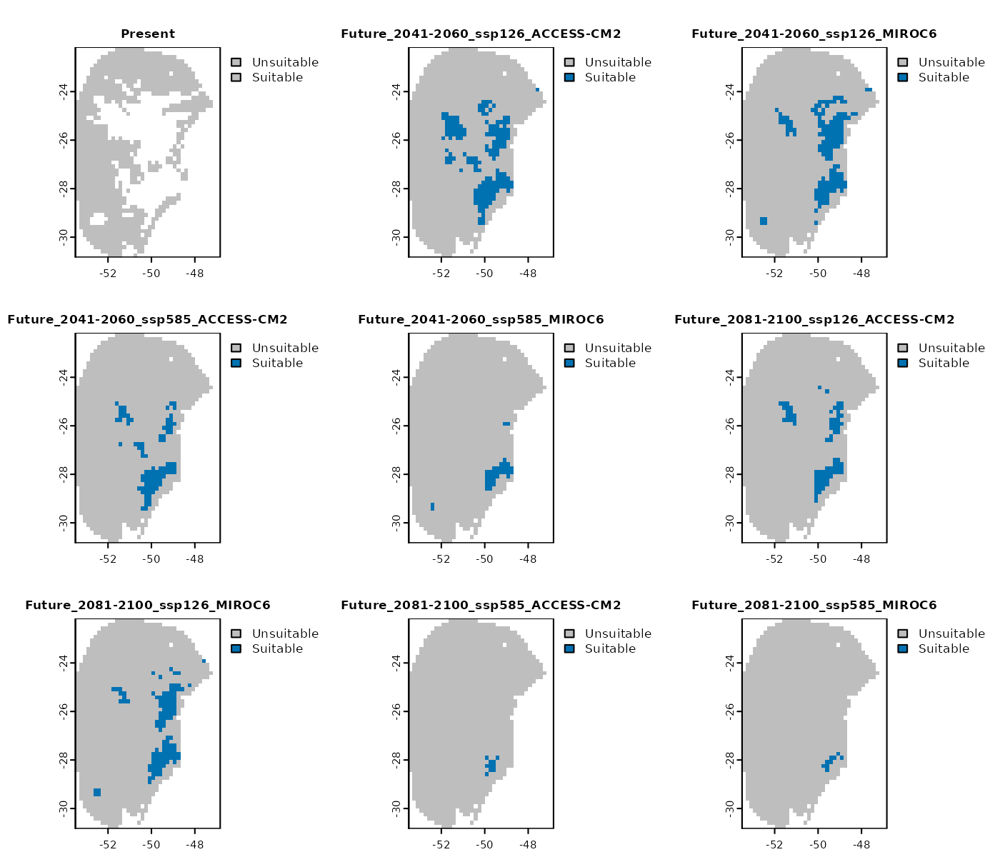
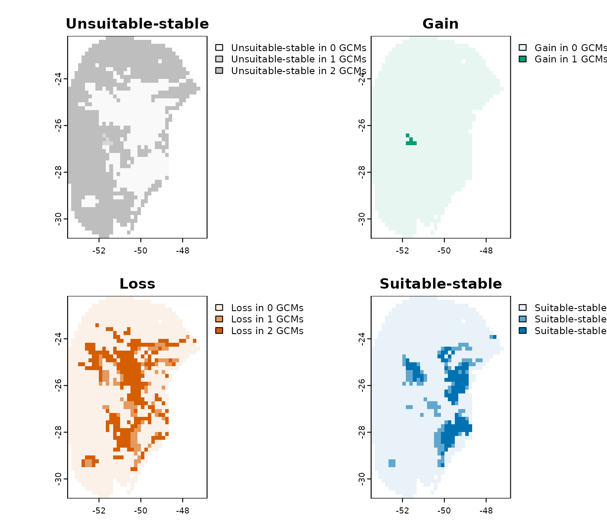

Exploring Model Uncertainty and Variability
Source:vignettes/variability_and_uncertainty.Rmd
variability_and_uncertainty.Rmd- Introduction
- Compute Changes Between Scenarios
- Explore Variance
- Analyze Extrapolation Risks Using the MOP Metric
Introduction
After projecting models across multiple scenarios using the
project_selected() function, several types of analyses can
be performed:
-
Compute changes between scenarios using the
projection_changes()function. -
Explore variability arising from replicates, model
parameterizations, and General Circulation Models (GCMs) with
projection_variability(). -
Assess extrapolation risks through analysis with
projection_mop().
These analyses require a model_projections object, which
is the output of project_selected(). This object contains
the predicted scenario data as well as the directory paths where the
projection rasters are saved.
To create this object, follow the steps outlined below and described in the “Project models to multiple scenarios” vignette.
#Load packages
library(kuenm2)
library(terra)
#> terra 1.8.60
#Import calib_results_maxnet
data("fitted_model_maxnet", package = "kuenm2")
# Import path to raster files with future predictors provided as example
# The data is located in the "inst/extdata" folder.
in_dir <- system.file("extdata", package = "kuenm2")
# Import raster layers (same used to calibrate and fit final models)
var <- rast(system.file("extdata", "Current_variables.tif", package = "kuenm2"))
#Get soilType
soiltype <- var$SoilType
# Organize and structure WorldClim files
#Create folder to save structured files
out_dir_future <- file.path(tempdir(), "Future_raw") #Here, in a temporary directory
#Organize
organize_future_worldclim(input_dir = in_dir, #Path to the raw variables from WorldClim
output_dir = out_dir_future,
name_format = "bio_", #Name format
fixed_variables = var$SoilType, #Static variables
progress_bar = FALSE, overwrite = TRUE)
#>
#> Variables successfully organized in directory:
#> /tmp/RtmpRqDWCW/Future_raw
# Create a "Current_raw" folder in a temporary directory
#and copy the rawvariables there.
out_dir_current <- file.path(tempdir(), "Current_raw")
dir.create(out_dir_current, recursive = TRUE)
# Save current variables in temporary directory
terra::writeRaster(var, file.path(out_dir_current, "Variables.tif"),
overwrite = TRUE)
# Prepare projections using fitted models to check variables
pr <- prepare_projection(models = fitted_model_maxnet,
present_dir = out_dir_current, #Directory with present-day variables
future_dir = out_dir_future, #Directory with future variables
future_period = c("2041-2060", "2081-2100"),
future_pscen = c("ssp126", "ssp585"),
future_gcm = c("ACCESS-CM2", "MIROC6"))
# Project selected models to multiple scenarios
## Create a folder to save projection results
#Here, in a temporary directory
out_dir <- file.path(tempdir(), "Projection_results/maxnet")
dir.create(out_dir, recursive = TRUE)
## Project selected models to multiple scenarios
p <- project_selected(models = fitted_model_maxnet,
projection_data = pr,
out_dir = out_dir,
write_replicates = TRUE,
progress_bar = FALSE, #Do not print progress bar
overwrite = TRUE)Compute Changes Between Scenarios
When projecting a niche model to different temporal scenarios (past or future), species’ areas can be classified into three categories relative to the current baseline: gain, loss and stability. The interpretation of these categories depends on the temporal direction of the projection.
When projecting to future scenarios:
- Gain: Areas that are currently unsuitable become suitable in the future.
- Loss: Areas that are currently suitable become unsuitable in the future.
- Stability: Areas that retain their current classification in the future, whether suitable or unsuitable.
When projecting to past scenarios:
- Gain: Areas that were unsuitable in the past are now suitable in the present.
- Loss: Areas that were suitable in the past are now unsuitable in the present.
- Stability: Areas that retain their past classification in the present, whether suitable or unsuitable.
These outcomes may vary across different General Circulation Models (GCMs) within each time scenario (e.g., various Shared Socioeconomic Pathways (SSPs) for the same period).
The projection_changes() function summarizes the number
of GCMs predicting gain, loss, and stability for each time scenario.
By default, this function writes the summary results to disk (unless
write_results is set to FALSE), but it does
not save the binarized results for individual GCMs. In the example
below, we demonstrate how to configure the function to both return the
resulting rasters and write the binarized results to disk.
changes <- projection_changes(model_projections = p,
output_dir = out_dir,
write_bin_models = TRUE, # Write individual binarized results
return_raster = TRUE)Set Colors for Change Maps
Before plotting the results, we can use the
colors_for_changes() function to assign custom colors to
areas of gain, loss, and stability. By default, the function uses ‘teal
green’ for gains, ‘orange-red’ for losses, ‘Oxford blue’ for areas that
remain suitable, and ‘grey’ for areas that remain unsuitable. However,
you can customize these colors as needed.
The opacity of each color is automatically adjusted based on the
number of GCMs: it is highest (as defined by max_alpha)
when all GCMs agree on a prediction, and decreases progressively (down
to min_alpha) as fewer GCMs support that outcome.
#Set colors for change maps
changes_col <- colors_for_changes(changes)The function returns the same changes_projections
object, but with color tables embedded in its SpatRasters.
These colors are automatically applied when visualizing the data using
plot().
Types os results
The projection_changes() function returns four main
types of results: binarized models, results by GCM, results by change,
and a general summary considering all GCMs:
-
Binarized models for each GCM: These are
suitable/unsuitable maps binarized for each individual GCM. By default,
the binarization applies the omission error threshold used when
selecting the best models (e.g., 10%). You can specify a different
threshold using the
user_thresholdargument.
plot(changes_col$Binarized, cex.main = 0.8)
- Results by gcm: provides the computed changes (gain, loss, stability) for each GCM individually.
plot(changes_col$Results_by_gcm, cex.main = 0.8)
-
Results by change: a list where each
SpatRasterrepresents a specific type of change (e.g., gain, loss, stability) across all GCMs for a given scenario.
# Results by change for the scenario of 2041-2060 (ssp126)
plot(changes_col$Results_by_change$`Future_2041-2060_ssp126`)
- Summary changes: provides a general summary indicating how many GCMs project gain, loss, and stability for each scenario.

Importing Results
When return_raster = TRUE is set, the resulting
SpatRaster objects are returned within the
changes object. By default, however,
return_raster = FALSE and the object only contains the
directory path where the results were saved.
In this case, the saved results can be imported using the
import_projections() function. You can specify the type of
computed changes to import, along with the target period and emission
scenario.
A changes_projections object imported using
import_projections() can also be used as input to
colors_for_changes() to customize the colors used for
plotting.
For example, below we import only the general summary for the 2041–2060 period under the SSP5-8.5 scenario:
general_changes <- import_projections(projection = changes,
future_period = "2041-2060",
future_pscen = "ssp585",
change_types = "summary")
#Set colors
general_changes <- colors_for_changes(general_changes)
#Plot
plot(general_changes$Summary, main = names(general_changes$Summary),
plg=list(cex=0.75)) #Decrease size of legend text
Save changes_projections
The changes_projections object is a list that contains
the resulting SpatRaster objects (if
return_raster = TRUE) and the directory path where the
results were saved (if write_results = TRUE).
If the results were not written to disk during the initial run, you
can save the SpatRaster objects afterward using the
writeRaster() function. For example, to save the general
summary raster:
writeRaster(changes$Summary_changes,
file.path(out_dir, "Summary_changes.tif"))If the results were saved to disk, the
changes_projections object is automatically stored in a
folder named Projection_changes inside the specified
output_dir. You can load it back into R using
readRDS():
After loading, this object can be used to import specific results
with the import_projections() function.
Explore Variance
When projecting niche models, predictions can vary across different
replicates, selected models, and
GCMs. The projection_variability()
function quantifies and spatializes these sources of variability,
offering valuable insights into prediction uncertainty.
This function requires a model_projections object, which
is generated by the project_selected() function.
By default, projection_variability() uses the
median consensus to summarize variance across selected
models and GCMs. Alternatively, users can specify other summary
statistics such as mean, range, or
sd (standard deviation).
To analyze variability originating from replicates, ensure that
write_replicates = TRUE is set when running
project_selected().
Below, we demonstrate how to calculate variance from these different
sources (replicates, models, and GCMs) and save the results to the
designated out_dir directory.
# Create a directory to save results
v <- projection_variability(model_projections = p, write_files = TRUE,
output_dir = out_dir,
verbose = FALSE, overwrite = T)The output is a variability_projections object, a list
containing SpatRaster layers that represent the variance
attributed to replicates, models, and GCMs for each scenario, including
the present time. These results highlight areas where prediction
uncertainty is higher.
For example, for the present time scenario, the variance mainly arises from differences among the replicates.

In the most pessimistic scenario (SSP5-8.5) for the 2081–2100 period, a slight variance is observed, primarily arising from the replicates and the different GCMs used.

Importing Results
Because write_files = TRUE was set, the
variability_projections object includes the file path where
the results were saved. You can use this path with the
import_projections() function to load the results whenever
needed.
# See the folder where the results were saved
v$root_directory
#> [1] "Temp/Projection_results/maxnet/variance"As an example, we will import the results for the 2041–2060 period under the SSP1-2.6 scenario. In this scenario, the variability mainly originates from differences among the selected models.
v_2041_2060_ssp126 <- import_projections(projection = v,
present = FALSE, #Do not import results from the present time
future_period = "2041-2060",
future_pscen = "ssp126")
# Plot
plot(v_2041_2060_ssp126, range = c(0, 0.1))
Saving the variability_projections Object
The variability_projections object is a list that
contains the resulting SpatRaster layers (if
return_raster = TRUE) and the directory path where the
results were saved (if write_files = TRUE).
If the results were not saved to disk during the initial run, you can
save the SpatRaster layers afterward using the
writeRaster() function. For example, to save the
variability map for one of the future scenarios:
writeRaster(v$`Future_2081-2100_ssp585`,
file.path(out_dir, "Future_2081-2100_ssp585.tif"))If the results were saved to disk, the
variability_projections object is automatically stored in a
folder named variance within the specified
output_dir. You can reload it into R using the
readRDS() function:
This object can then be used to import the results with the
import_projections() function.
Analyze Extrapolation Risks Using the MOP Metric
When projecting model predictions to new regions or time periods, it is common to encounter non-analogous conditions, environmental conditions not present in the calibration area.
For example, the maximum temperature (bio_1) in our model’s calibration area was :
max(fitted_model_maxnet$calibration_data$bio_1)
#> [1] 22.6858However, in future scenarios, conditions are projected to become warmer, and temperatures may reach higher values. To illustrate this, let’s import environmental variables from one of the GCMs (ACCESS-CM2) under the future scenario SSP5-8.5 and examine the maximum temperature:
#Import variables from the 2081-2100 period (SSP585, GCM MIROC6)
future_ACCESS_CM2 <- rast(file.path(out_dir_future,
"2081-2100/ssp585/ACCESS-CM2/Variables.tif"))
minmax(future_ACCESS_CM2$bio_1)
#> bio_1
#> min 17.8
#> max 29.6
#Plot
plot(future_ACCESS_CM2$bio_1,
breaks = c(-Inf, 22.7, Inf)) #Highlight regions with temperature above 22.7ºC
Note that in most of the projected area, temperatures are expected to exceed the current maximum temperature.
The projection_mop() function performs Mobility-Oriented
Parity (MOP) analysis (Owens et
al. 2013), which identifies areas with non-analogous environmental
conditions that pose extrapolation risks. It also quantifies how
dissimilar conditions in the projection area are relative to the
calibration data.
The MOP analysis requires the following inputs:
- An object of class
fitted_modelsreturned by thefit_selected()function, or an object of classprepared_datareturned byprepare_data(). These objects contain the calibration data defining the environmental conditions used during model training.- If you wish to perform MOP only on the variables used in the
selected models, set
subset_variables = TRUEand provide afitted_modelsobject.
- If you wish to perform MOP only on the variables used in the
selected models, set
- An object of class
projection_datareturned by theprepare_projection()function, which contains the paths to raster layers representing environmental conditions in the projected scenarios.
By default, projection_mop() performs a basic
MOP, which highlights regions with non-analogous conditions relative to
the calibration data. Alternatively, you can set: -
type = "simple" to compute the number of variables with
non-analogous conditions per location. - type = "detailed"
to identify exactly which variables exhibit non-analogous
conditions.
Below, we perform a detailed MOP to identify areas with extrapolation risk in the future scenarios for which predictions were made:
# Create a folder to save MOP results
out_dir_mop <- file.path(tempdir(), "MOPresults")
dir.create(out_dir_mop, recursive = TRUE)
# Run MOP
kmop <- projection_mop(data = fitted_model_maxnet, projection_data = pr,
subset_variables = TRUE,
calculate_distance = TRUE,
out_dir = out_dir_mop,
type = "detailed",
overwrite = TRUE, progress_bar = FALSE)The function returns a mop_projections object, which
contains the paths to the directories where the results were saved. This
object can be used with the import_projections() function
to load the results.
MOP types
The results of the MOP analysis provide multiple perspectives on
extrapolation risks. Each component of the mop_projections
object captures a different aspect of the dissimilarity between
environmental conditions in the calibration and projection areas.
When importing results, you can specify the scenarios (e.g., “2081-2100” and “ssp585”) as well as the type of MOP results to load. By default, all available MOP types are imported, including:
- basic
- simple
- towards_high_combined
- towards_low_combined
- towards_high_end
- towards_low_end
Below, we examine all MOP results for the SSP5-8.5 scenario during the 2081–2100 period:
mop_ssp585_2100 <- import_projections(projection = kmop,
future_period = "2081-2100",
future_pscen = "ssp585")
#See types of results
names(mop_ssp585_2100)
#> [1] "distances" "simple" "basic"
#> [4] "towards_high_combined" "towards_low_combined" "towards_high_end"
#> [7] "towards_low_end"Distances
The distances result represents the Euclidean or Mahalanobis distance between the projected environmental conditions (G) and those in the calibration dataset (M). Higher distance values indicate greater dissimilarity from the calibration conditions, highlighting areas with increased extrapolation risk.
plot(mop_ssp585_2100$distances)
Basic
The basic result identifies areas where at least one environmental variable differs from the reference (calibration) conditions. A value of ‘1’ indicates the presence of non-analogous conditions in that specific area and scenario.
plot(mop_ssp585_2100$basic)
Simple
The simple result quantifies the number of environmental variables in the projected area that are non-analogous to those in the calibration data.
plot(mop_ssp585_2100$simple)
Combined Towards High/Low
The towards_high_combined and towards_low_combined results identify which variables exhibit non-analogous conditions. Specifically, towards_high_combined highlights variables with values exceeding those observed in the calibration data, while towards_low_combined highlights variables with values below the calibration range.
# Non-analogous conditions towards high values
plot(mop_ssp585_2100$towards_high_combined)
# Non-analogous conditions towards low values
plot(mop_ssp585_2100$towards_low_combined)
Towards High/Low End
The towards_high_end and towards_low_end results
are similar to their “combined” counterparts but provide individual
SpatRaster layers for each variable.
# Non-analogous conditions towards high values in the ACCESS-CM2 scenario
plot(mop_ssp585_2100$towards_high_end$`Future_2081-2100_ssp585_ACCESS-CM2`)
# Non-analogous conditions towards low values in the MIROC6 scenario
plot(mop_ssp585_2100$towards_low_end$`Future_2081-2100_ssp585_ACCESS-CM2`,
main = names(mop_ssp585_2100$towards_low_end$`Future_2081-2100_ssp585_ACCESS-CM2`))
Handling In-Range Values: NA or Zero
By default, the projection_mop() function assigns
NA to cells whose values fall within the range of the
calibration data, indicating they are considered analogous.
Alternatively, you can assign a value of 0 to these cells by setting
na_in_range = FALSE when running
projection_mop().
# Create a folder to save MOP results, now assigning 0 to cells within the range
out_dir_mop_zero <- file.path(tempdir(), "MOPresults_zero")
dir.create(out_dir_mop_zero, recursive = TRUE)
# Run MOP
kmop_zero <- projection_mop(data = fitted_model_maxnet, projection_data = pr,
subset_variables = TRUE,
na_in_range = FALSE, #Assign 0 to cells within range
calculate_distance = TRUE,
out_dir = out_dir_mop_zero,
type = "detailed",
overwrite = TRUE, progress_bar = FALSE)Let’s explore how this setting affects the simple and detailed MOP outputs:
# Import MOP for the scenario ssp585 in 2081-2100
mop_ssp585_2100_zero <- import_projections(projection = kmop_zero,
future_period = "2081-2100",
future_pscen = "ssp585")
# Compare with the MOP that assigns NA to cells within the calibration range
# Simple MOP
plot(c(mop_ssp585_2100$simple$`Future_2081-2100_ssp585_ACCESS-CM2`,
mop_ssp585_2100_zero$simple$`Future_2081-2100_ssp585_ACCESS-CM2`),
main = c("Within range as NA", "Within range as 0"))
# Detailed MOP
plot(c(mop_ssp585_2100$towards_high_combined$`Future_2081-2100_ssp585_ACCESS-CM2`,
mop_ssp585_2100_zero$towards_high_combined$`Future_2081-2100_ssp585_ACCESS-CM2`),
main = c("Within range as NA", "Within range as 0"),
plg=list(cex=0.6))
Comparing MOP Results with Response Curves
While the projection_mop() function identifies areas
with non-analogous environmental conditions, the actual risk of
extrapolation depends strongly on additional factors,
especially the response curves of the environmental variables.
For example, consider a future scenario predicted by a GCM (e.g., ACCESS-CM2 under SSP5-8.5 for 2081–2100), where values of bio_1 (Annual Mean Temperature), bio_12 (Annual Precipitation) and bio_15 (Precipitation Seasonality) exceed the upper limits observed in the calibration data.
# Non-analogous conditions towards high values in the MIROC6 scenario
plot(mop_ssp585_2100$towards_high_combined$`Future_2081-2100_ssp585_ACCESS-CM2`)
Now, let’s examine the response curves for these variables. To better
visualize how the model responds to the range of values projected in
this future scenario, we can set the plotting limits using the
scenario’s variable values as new_data:
par(mfrow = c(1,3)) #Set plot grid
response_curve(models = fitted_model_maxnet, variable = "bio_1",
new_data = future_ACCESS_CM2)
response_curve(models = fitted_model_maxnet, variable = "bio_12",
new_data = future_ACCESS_CM2)
response_curve(models = fitted_model_maxnet, variable = "bio_15",
new_data = future_ACCESS_CM2)
#Reinitiate grids
on.exit()In the response curves for bio_1, bio_12, and bio_15, higher values correspond to lower suitability, reaching zero near the upper limit of the calibration data (indicated by a dashed line). Beyond this upper limit, suitability remains close to zero. Given this pattern, it is unlikely that suitability would increase suddenly at even higher values, which provides greater confidence in the model’s extrapolation for these variables.
Next, let’s investigate the variables with values below the lower limit of the calibration data:
# Non-analogous conditions towards low values in the MIROC6 scenario
par(mfrow = c(1,2)) #Set grid
plot(mop_ssp585_2100$towards_low_combined$`Future_2081-2100_ssp585_ACCESS-CM2`)
## It's bio 7. Plot response curve:
response_curve(models = fitted_model_maxnet, variable = "bio_7",
new_data = future_ACCESS_CM2)
#Reinitiate grid
on.exit()In some regions of the projected scenario, bio_7
(Temperature Annual Range) exhibits values below the lower limit
of the calibration data. The response curve indicates that,
when extrapolating to these lower values, suitability continues to
increase. This situation represents a higher risk of
extrapolation and substantial uncertainty, as
we don’t know whether suitability truly continues to rise at these low
bio_7 values or if (and where) it might eventually
decline.
This example highlights why we strongly recommend interpreting MOP results alongside the response curves.
Saving and Importing MOP Results
When projection_mop() is run, it automatically saves the
mop_projections object as an RDS file in the specified
out_dir. You can reload this object in R at any time using
the readRDS() function:
# Check for RDS files in the directory where we saved the MOP results
list.files(path = out_dir_mop, pattern = "rds")
#> [1] "mop_projections.rds"
# Import the mop_projections file
kmop <- readRDS(file.path(out_dir_mop, "mop_projections.rds"))